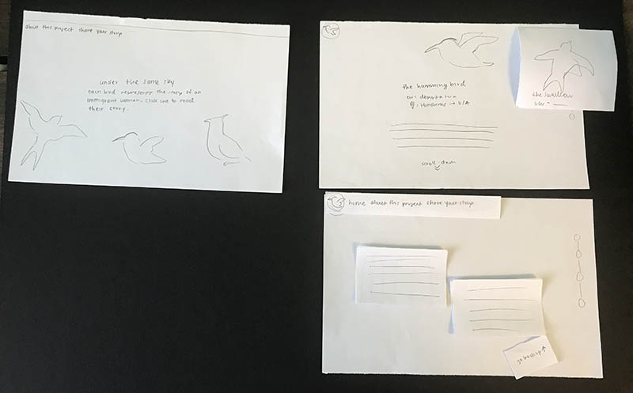
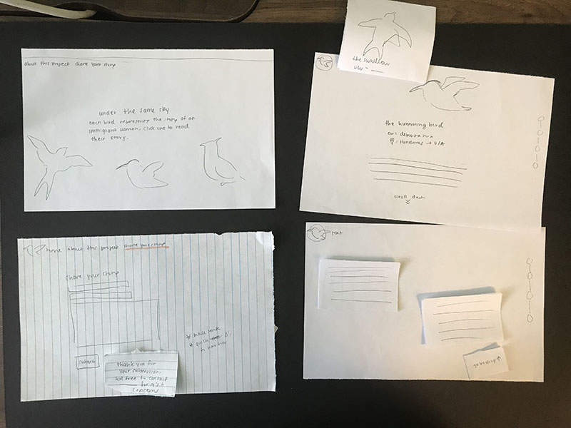
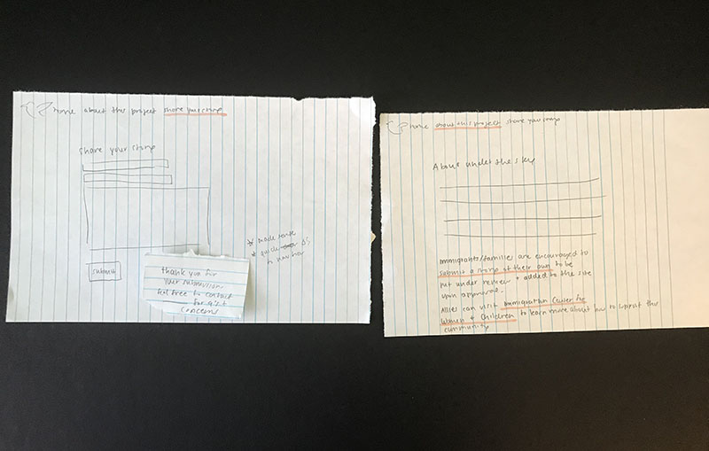

Paper Prototypes
For the first round of paper prototypes, I used a sheet of paper for each screen and made smaller cutouts to represent changes in icons and the interface. The tester had to navigate from the home page of the project to the other pages by clicking icons and scrolling up/down to see the interaction of the stories. For this round of testing, the tester found the overall flow and experience to be streamlined and easy to use. Some issues that came up was the lack of additional pages for the "about" and "share your story" tabs in the menu bar.

For the second iteration of the paper prototypes, I included the "about" and "share your story" tabs to make those options available for users. During the second round of testing, the tester went through the same processes and navigated throughout the project's home page and the different interactive story pages. However, an issue that came up was that the tester was confused about whether the icon at the top left corner was just a home button/logo or not, and didn't seem to understand if the icon also served as a hamburger menu. For future iterations, I will most likely take out the hamburger menu option and use a more visible menu bar.

